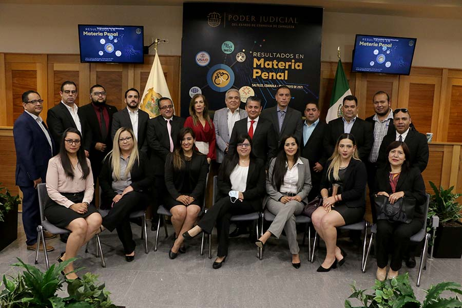

CAPÍTULO 3. JUSTICIA DE CALIDAD
Nuestra función jurisdiccional debe trascender hasta llegar a alcanzar condiciones de eficiencia, accesibilidad, transparencia e imparcialidad. En Coahuila, la persona usuaria es considerada como el epicentro en todo esfuerzo realizado para resguardar y garantizar su derecho de acceso a la justicia en condiciones de igualdad y oportunidad.
De esta manera, el ofrecer calidad en nuestros servicios se convierte en nuestro principal desafío para estar en condiciones de mantener un sistema judicial eficaz que además asegure un trato amable y sensible a todas las personas, por lo que trabajamos en encaminar todas nuestras estrategias para alcanzar estos objetivos.
Así, nuestra aspiración a la calidad y la excelencia en la prestación de servicios en el ámbito judicial debe primar, tanto entre los miembros de la judicatura como entre todos los funcionarios y funcionarias del Poder Judicial.
Por ello, la administración de justicia se convierte en un servicio público que debe brindarse bajo los más altos estándares de calidad en resguardo de los derechos fundamentales de la ciudadanía, pues la justicia representa un valor sobre el cual descansan las bases de un Estado democrático de derecho.
En este apartado destacamos las acciones realizadas en el ámbito de la calidad con la que se conducen todos nuestros órganos e informamos los resultados obtenidos en áreas como el Sistema Integral de Calidad y Gestión Documental, la certificación en juicios orales mercantiles, los trabajos realizados por las Centrales de Actuarios, la Oficialía Común de Partes, el Archivo Judicial General, la estadística arrojada por cada órgano jurisdiccional en cuanto la atención de asuntos y el uso y aprovechamiento de nuestros recursos financieros.
COORDINACIÓN DE CALIDAD DEL INSTITUTO ESTATAL DE DEFENSORÍA PÚBLICA
La medición sobre la calidad en los servicios que otorgamos nos permite adoptar las decisiones adecuadas en beneficio del público usuario, así como mejorar y transparentar la función que desempeñamos.
A través de la Coordinación de Calidad del Instituto Estatal de Defensoría Pública, evaluamos el grado de satisfacción del usuario mediante el uso de las herramientas tecnológicas de la información y comunicación, como instrumentos de medición.
Para este propósito utilizamos distintas plataformas para enviar encuestas que nos permiten conocer la percepción de los usuarios del Taller de Orientación Prematrimonial, de los servicios ofrecidos por la Unidad de Defensa Administrativa así como por la Unidad de Defensa Civil y Familiar del mismo IEDP. Y a partir del mes de abril estos instrumentos se han aplicado de manera presencial en la Unidad de Defensa Penal, a través de entrevistas después de audiencia inicial o al término de la asesoría para el resto de los procesos. Derivado de estos instrumentos de medición, este año obtuvimos un porcentaje de satisfacción de 95.04 por ciento.
SISTEMA INTEGRAL DE CALIDAD Y GESTIÓN DOCUMENTAL
En la búsqueda de una mejora continua de los servicios que ofrece el Poder Judicial, durante 2021 trabajamos en el mejoramiento de la gestión documental y de calidad basada en procesos. Durante este periodo diseñamos el Sistema Integral de Calidad y Gestión Documental (SICGD), mismo que permitirá estandarizar los procesos, establecer parámetros para su medición y control, identificar riesgos y oportunidades, así como establecer objetivos y metas claras para la mejora continua de la labor que desempeñan las diversas instancias que integran este poder público.
La implementación de este sistema bajo las Normas Internacionales ISO 9001:2015 e ISO 30301:2019 busca que las acciones que desarrollamos nos permitan seguir en una ruta de transformación institucional. En ese sentido, diseñamos e implementamos en una primera etapa el desarrollo del SICGD en las Centrales de Actuarios, las Oficialías de Partes y el Ar-chivo Judicial General, definimos las bases para que su actuación sea bajo un esquema de trabajo enfocado a procesos, en donde los operadores de estas instancias y quienes intervienen en su funcionamiento por parte de diversas áreas administrativas, sean capaci-tados y cuenten con las herramientas necesarias para mejorar su desempeño, en estricto apego a los requisitos que establecen las normas internacionales.
El SIGCD permitirá medir su eficacia y valorar los resultados obtenidos a fin de llevar a cabo las mejoras necesarias que establecen las normas internacionales, en beneficio de arraigar la cultura de mejora continua y perfeccionar la labor judicial.
La certificación de las Centrales de Actuarios, Oficialías de Partes y el Archivo Judicial, consolidará y fortalecerá la coordinación administrativa, la capacitación a servidores judiciales y la comunicación con los usuarios, mejorando la impartición de justicia y ampliando la posibilidad de alcance del sistema a otras áreas que permitan la alineación de esfuerzos en un solo rumbo.
El Poder Judicial mantiene su compromiso al preparar las áreas a certificar para acceder a una evaluación exitosa, y por ende, lograr la aprobación del ente certificador, labor que en conjunto participan los servidores públicos judiciales a fin de ofrecer a la ciudadanía un servicio de calidad bajo los parámetros internacionales establecidos.
Durante el 2021, como base fundamental para la implementación efectiva de este sistema de gestión, dimos inicio a la capacitación en el SICGD para el personal judicial, en el estudio de las normas ISO 9001:2015 e ISO 30301:2019, así como de la integración e implementación gradual del sistema con base en los requisitos establecidos por las mismas.
De igual forma nos dimos a la tarea de elaborar el Manual Integral del SICGD, en el que se establece su objetivo, se determina el alcance, responsabilidades y roles, así como la planificación y objetivo de calidad determinados.
Concluimos el mapeo de procesos de la Central de Actuarios, las Oficialías de Partes y del Archivo Judicial General, en donde elaboramos formatos, identificamos riesgos y oportunidades, así como las variables clave y los requisitos legales que cada proceso a su cargo debe cumplir.
El mapeo de procesos permite que las áreas operativas y las áreas de apoyo documenten sus procedimientos y con ello, el personal involucrado ejecute acciones estandarizadas, utilice los recursos de la misma forma, pero sobre todo, ofrezca resultados similares en calidad y servicio a los ciudadanos.
Además, trabajamos en la construcción de un sistema digital que permitirá el control documental, que se enfocará en el proceso de gestión y en la atención a los requisitos establecidos, pero sobre todo será funcional a la naturaleza de nuestras actuaciones. La administración digital del SICGD se traduce en la optimización de recursos, además de que brinda una accesibilidad inmediata y un proceso de actualización muy ágil.
Reiteramos nuestro compromiso de proporcionar un servicio de impartición de justicia de calidad, acorde al mandato constitucional y a los requerimientos de los tiempos actuales. Esta certificación sin duda nos beneficiará significativamente pues habrá una mejora en nuestros esquemas de operación, logrando así un avance importante para ofrecer a la sociedad la justicia que merece.
CERTIFICACIÓN EN JUICIOS ORALES MERCANTILES
Dentro de las certificaciones que fomentan las buenas prácticas nacionales e internacionales en la impartición de justicia, se encuentran las emitidas por la Comisión Nacional de Mejora Regulatoria (CONAMER), en particular el certificado en Juicios Orales Mercantiles (JOM). Con este programa se promueve la correcta implementación de los juicios orales mercantiles en los juzgados y tribunales del país, a través de acciones de mejora regulatoria que aseguran una impartición de justicia de calidad, pronta y expedita en esa materia.
En el Poder Judicial del Estado integramos una Comisión Interinstitucional con el objeto de atender de manera directa la implementación y mejora en la realización de los juicios orales mercantiles. En ese sentido trabajamos de manera coordinada con la CONAMER a fin de dar puntual atención a las recomendaciones brindadas para la mejora continua de los procesos mercantiles, ubicándonos en su momento, en los mejores lugares a nivel nacional en el avance de este Programa de Certificación.
A lo largo del camino, realizamos diversas actividades rumbo a la certificación, entre ellas destacan la capacitación y el desarrollo del sistema de gestión en materia mercantil.
Gracias al esfuerzo conjunto, a mediados de 2021, la CONAMER llevó a cabo la evaluación correspondiente en cuanto a la cobertura de juzgados, cargas de trabajo, disponibilidad de salas de audiencia y equipo móvil, sistemas tecnológicos, marco jurídico y normativo, actividades de capacitación, estadística judicial y tiempos de resolución en juicios orales mercantiles.
Así fue que logramos el cumplimiento estimado que nos permitió obtener la certificación por un período de dos años, colocándonos como uno de los nueve tribunales locales con esta certificación.
Ahora en Coahuila con la implementación de la oralidad en esta materia y el uso de nuevas tecnologías de la información, los procesos jurisdiccionales son más rápidos y eficientes, lo que redunda en la calidad de la justicia que brindamos.
Catálogo Nacional de Regulaciones, Trámites y Servicios La mejora regulatoria nos conmina a implementar acciones continuas para lograr una mejora permanente en el quehacer jurisdiccional. Así, como parte de las herramientas que implementa la CONAMER, se encuentra el Catálogo Nacional de Regulaciones, Trámites y Servicios, mismo que busca otorgar seguridad jurídica a las personas, dar transparencia y facilitar el cumplimiento regulatorio en la materia.
Durante el 2021 se llevó a cabo la inscripción y actualización al Catálogo Nacional, todas las regulaciones, trámites y servicios que el Poder Judicial de Coahuila ofrece, inscribiendo en la plataforma nacional para su consulta pública un total de 11 trámites, cuatro servicios y 16 regulaciones, entre los que podemos mencionar: la solicitud de copias certificadas, las certificaciones de mediadores, la constancia de no deudor alimentario moroso, entre otros.
Derivado de esta inscripción, toda esta información mencionada puede consultarse en la página catalogonacional.gob.mx en la sección de Temas de interés clasificados en el apartado de Seguridad, Legalidad y Justicia y en donde encontramos datos sobre el trámite, descripción ciudadana, responsable, requisitos, formatos, costo, plazo de respuesta por parte de la dependencia, criterios, fundamentos jurídicos, dirección de oficinas de atención y contacto.
Observatorio Nacional de Mejora Regulatoria
Asimismo, dentro de las acciones realizadas durante el periodo que se informa, nuestra institución participó en el indicador de avance de la Estrategia Nacional de Mejora Regulatoria (IENMR) por parte del Observatorio Nacional de Mejora Regulatoria, mismo que tiene como objetivo impulsar y supervisar la implementación de esta política, así como garantizar la consecución de los objetivos, metas y líneas de acción establecidas. Con esto se busca medir la calidad de los instrumentos jurídicos que regulan e impulsan la política en nuestra entidad, así como su grado de homologación con la Ley General de Mejora Regulatoria.
OFICIALÍAS DE PARTES
Es a través de las Oficialías de Partes que recibimos los escritos de demanda, así como todos aquellos con los que se inicia un procedimiento judicial en las materias civil, mercantil y familiar; también recibimos los escritos de término que se presentan fuera del horario de labores de los tribunales o juzgados en las materias mencionadas, así como en materia penal, exhortos, rogatorias, suplicatorias, requisitorias, oficios o promociones así como todos aquellos escritos que se acompañen a las demandas de amparo directo y las promociones en que se solicitan medidas cautelares, medidas preparatorias y procedimientos no contenciosos.
En ese sentido, la función de estos órganos administrativos nos da apoyo en el desempeño de la función jurisdiccional y nos permite asignar el número estadístico a las demandas de juicios universales o actos prejudiciales ya iniciados que deban acumularse por razones de conexidad.
En las Oficialías de Partes ubicadas en los Distritos Judiciales de Monclova, Río Grande, Saltillo y Torreón, durante 2021, recibimos 56 mil 666 demandas iniciales, 390 mil 532 promociones y cinco mil 833 exhortos.
Tabla 15. Actividad de las Oficialías de Partes del Poder Judicial del Estado de Coahuila de Zaragoza.
| Distrito Judicial | Demandas Iniciales | Promociones | Exhortos |
|---|---|---|---|
| Monclova | 8,442 | 59,6081 | 859 |
| Río Grande | 3,111 | 21,154 | 445 |
| Saltillo | 24,399 | 175,287 | 1,887 |
| Torreón | 20,714 | 134,483 | 2,642 |
| Total | 56,666 | 390,532 | 5,833 |
Fuente: Oficialías de Partes de los Distritos Judiciales. Poder Judicial del Estado de Coahuila de Zaragoza. 2021.
CENTRAL DE ACTUARIOS
Las Centrales de Actuarios son las unidades administrativas dependientes del Consejo de la Judicatura encargadas de la organización del turno aleatorio y el control de las diligencias ordenadas por los órganos jurisdiccionales en todo nuestro estado que se efectúan fuera de la sede judicial. Su trabajo es realizado con apoyo del uso de las tecnologías de la información y bajo los principios de objetividad, imparcialidad, profesionalismo, legalidad y certeza jurídica.
Durante el año 2021, logramos efectuar a través de la Central de Actuarios en el Distrito Judicial de Saltillo 13 mil 292 notificaciones, siendo 11 mil 913 efectivamente cumplidas; y por causa ajenas a las y los actuarios, mil 379 no fueron posibles de notificar.
En lo que respecta a la Central de Actuarios en el Distrito Judicial de Torreón, realizamos 10 mil 907 notificaciones, de las cuales siete mil 541 se dieron de manera efectiva, empero por cuestiones fuera del alcance de las y los actuarios, aun y cuando se efectuaron las diligencias conducentes, no se lograron notificar tres mil 366.
Además de lo anterior, y derivado del Acuerdo C-035/2021 emitido por el Consejo de la Judicatura, en la Central de Actuarios logramos en el 2021 la implementación del sistema de boletas electrónicas de gestión actuarial (BEGA).
Este sistema fue desarrollado en conjunto por la Dirección de Innovación e Informática de la Oficialía Mayor, la Central de Actuarios y juzgados de primera instancia. Es a través de éste que se lleva a cabo el envío electrónico de las boletas, lo que permite a las y los litigantes conocer en todo momento la instancia en la que se encuentra la diligencia, y también facilita su preciso seguimiento.
Es decir, la persona usuaria en lugar de llenar la boleta físicamente puede hacerlo desde cualquier computadora o instrumento móvil en línea. Hecho esto, la envía de manera digital a la o el actuario del juzgado respectivo para su validación y el llenado de la cédula de notificación. Luego, la persona actuaria remite la boleta a la Central de Actuarios. Con esto logramos reducir los errores en la emisión de las boletas, así como el tiempo en el trámite de las mismas. Hasta diciembre logramos enviar un total de tres mil 586 boletas electrónicas.
ARCHIVO JUDICIAL GENERAL
Como parte de los servicios brindados por el Poder Judicial del Estado, se encuentra el de la consulta gratuita de expedientes judiciales por parte de litigantes y del público en general. A fin de garantizar que lo anterior se realice con los más altos estándares de calidad, contamos con el órgano administrativo adscrito a la Presidencia del Tribunal Superior de Justicia denominado Archivo Judicial General. Es a través del mismo que logramos la recepción, depósito, resguardo, conservación, orden y clasificación de todos los expedientes y documentos generados tanto por los juzgados y tribunales, como por los órganos no jurisdiccionales y administrativos que integran este poder. Además, como parte de sus la-bores se encuentra también la de brindar atención a los usuarios. Todo lo anterior, a través del Archivo Judicial General y de los cinco archivos regionales que atienden las necesidades de los ocho distritos judiciales.
En ese sentido, este año que informamos logramos recibir por parte de los juzgados de primera instancia 78 mil 718 expedientes a fin de llevar a cabo el depósito y resguardo correspondientes en las instalaciones del archivo. También, se remitieron a los mismos órganos 23 mil 972 expedientes en atención a las solicitudes generadas por éstos a través del sistema SIBED.
Realizamos durante este mismo año, la expedición de 71 mil 239 copias simples, así como de 22 mil 963 copias certificadas y dimos atención en tiempo y forma a cinco mil 676 consultas gratuitas efectuadas por la población.
Tabla 16. Actividad del Archivo Judicial General, por Distrito Judicial.
| Distrito Judicial | Expedientes remitidos por juzgados | Expedientes remitidos a juzgados | Consultas | Expedición de copias simples | Expedición de copias certificadas |
|---|---|---|---|---|---|
| Acuña | 1,807 | 938 | 185 | 3,360 | 3,391 |
| Monclova | 8,094 | 2,652 | 1,352 | 31,274 | 2,143 |
| Río Grande | 6,656 | 1,886 | 310 | 0 | 2,324 |
| Sabinas | 1,921 | 2,009 | 193 | 7,781 | 2,041 |
| Saltillo | 32,880 | 10,142 | 3,565 | 28,824 | 13,064 |
| Torreón | 27,360 | 6,345 | 71 | 0 | 0 |
| Total | 78,718 | 23,972 | 5,676 | 71,239 | 22,963 |
Fuente: Archivo Judicial General. Poder Judicial del Estado de Coahuila de Zaragoza. 2021.
Además, logramos realizar diversas acciones encaminadas al mejoramiento en materia de archivos, entre las cuales se encuentra la continuidad en la implementación del Sistema Integral de Búsqueda de Expedientes y Digitalización (SIBED), plataforma que nos permite mantener una constante comunicación entre el archivo y los órganos jurisdiccionales de primera instancia a fin de facilitar la solicitudes de expedientes, así como la entrega de los mismos cuando los asuntos han sido concluidos o se encuentran inactivos.
En concordancia con lo anterior, avanzamos este 2021 con la implementación iniciada en 2020, y lo hicimos a lo largo de dos etapas. Una se realizó en el primer semestre del año, y en la cual pudimos brindar capacitación al personal asignado en los juzgados de primera instancia en las materias familiar, mercantil, así como letrados, adscritos a los Distritos Judiciales de Saltillo y Parras, e hicimos entrega de los usuarios y contraseñas requeridos para ingresar de forma segura a la plataforma con el fin de realizar las solicitudes de expedientes y remisiones correspondientes.
La segunda etapa la realizamos durante los meses de julio a diciembre, y logramos capacitar al personal de los Juzgados de Primera Instancia en Materia Civil, en Materia Familiar y en Materia Mercantil de los Distritos Judiciales de Acuña, Monclova, Río Grande y Torreón. A todos ellos se les brindó de igual modo el usuario y la contraseña correspondientes.
Como parte de lo antes mencionado, durante las dos etapas, también logramos un significativo avance en la digitalización de expedientes, gracias al software de reconocimiento de texto OCR (por sus siglas en inglés: Optical Character Recognition), el cual permite la plena identificación de los mismos. Así, realizamos el fotocopiado de la carátula y las primeras cinco fojas de cada expediente, y colocamos de dos a tres códigos QR por cada expediente para que sea posible identificar y rastrear los datos e información del expediente a través del número que contiene el código.
Cabe mencionar que en la segunda etapa, logramos la digitalización de expedientes pertenecientes a órganos jurisdiccionales de segunda instancia, tales como son: la Sala Colegiada Civil y Familiar, la Sala Colegiada Penal, la Sala Regional, los cuatro Tribunales Distritales y el Tribunal de Conciliación y Arbitraje. En ese mismo sentido, trabajamos con los expedientes de los recién implementados Juzgados Especializados en Violencia Familiar contra la Mujer. De esta manera reforzamos nuestro compromiso de mantener en constante actualización y modernización los quehaceres jurisdiccionales a fin de brindarle a la ciudadanía una mayor calidad en la impartición de justicia.
Aunado a lo anterior, destacamos otra de las actividades en materia archivística que se logró durante el año 2021. En el mes de julio, el Pleno del Consejo de la Judicatura del Estado de Coahuila de Zaragoza, aprobó y emitió las Reglas de Operación de la Comisión Interdisciplinaria de Archivos del Poder Judicial del Estado de Coahuila, a fin de sentar las bases para la creación, integración y funcionamiento de esa comisión, cuyo objeto es asegurar la debida conservación y el destino de los archivos físicos y electrónicos de este poder público, para lograr el debido cumplimiento a la normatividad en la materia.
Esta comisión se encuentra conformada por representantes de diversos órganos, tales como: el Magistrado Presidente del Tribunal Superior de Justicia y del Consejo de la Judicatura del Poder Judicial del Estado de Coahuila de Zaragoza, un Magistrado del Tribunal Superior de Justicia del Estado, un juez de primera instancia, el titular de la Secretaría de Acuerdo y Trámite del Consejo de la Judicatura, el titular de la Oficialía Mayor del Poder Judicial del Estado, el titular de la Secretaría Técnica y de Transparencia de la Presidencia del Tribunal Superior de Justicia, Zaragoza, el titular de la Visitaduría General Judicial, el titular de la Unidad de Atención a Solicitudes de Acceso a la Información, y titular del Archivo Judicial General.
Además, participamos en diversos eventos como la Asamblea General de Invierno, en la cual compartimos con otras instituciones archivísticas planes y objetivos en común. Así mismo estuvimos presentes en la primera reunión de la Red Nacional de Archivos Judiciales de la CONATRIB, donde participamos en la mesa de discusión Diagnóstico y Prospectiva de los Archivos Judiciales: una evaluación necesaria de cara al cumplimiento de la Ley General de Archivos, en ella intervenimos con la experiencia de nuestro archivo judicial en la implementación de la Ley General de Archivos.
Logramos también un avance importante en la modernización de todo nuestro archivo a lo largo de los diversos distritos judiciales, a través de la inversión de 1.4 millones de pesos tanto en material como en herramientas que facilitan la realización de las actividades por parte del personal adscrito a este órgano y que permiten otorgar un mejor servicio a la ciudadanía.
ESTADÍSTICA JURISDICCIONAL
Con el propósito de dirigir nuestras metas, planear acciones concretas y atender las necesidades de cada Distrito Judicial, concentramos los informes estadísticos mensuales que dan cuenta de los avances del quehacer cotidiano de los órganos jurisdiccionales y no jurisdiccionales que forman parte de este Poder Judicial.
A través de la Unidad de Evaluación y Estadística de la Secretaría Técnica y de Transparencia en coordinación con la Visitaduría Judicial General, se recopila y analiza esta información, la cual nos permite medir el desempeño de cada órgano, nos posibilita la rendición de cuentas y nos auxilia en la toma de decisiones.
En este apartado se describen los datos estadísticos sobre la labor de los órganos jurisdiccionales que integran el Poder Judicial del Estado de Coahuila de Zaragoza, presentados por instancia de actuación y materia especializada.
JUSTICIA EN LOS TRIBUNALES DE ALZADA
Las Salas Colegiadas Penal, Civil y Familiar así como la Sala Regional con sede en la ciudad de Torreón integran el Tribunal Superior de Justicia del Estado; éstas tienen la facultad para atender los recursos interpuestos en contra de las sentencias definitivas dictadas por los jueces de Primera Instancia, emiten jurisprudencias y resuelven sobre excusas o recusaciones que son presentadas en contra de los integrantes de la sala y de los jueces de su jurisdicción, asimismo estas salas conocen los recursos de apelación y queja procesal que se interpongan en asuntos de su competencia o los conflictos competenciales que se susciten en torno a su materia, además de las obligaciones marcadas en la legislación estatal. La labor de las Salas del Tribunal Superior de Justicia en este año se desglosa a continuación:
JUSTICIA EN LOS TRIBUNALES DE ALZADA
Las Salas Colegiadas Penal, Civil y Familiar así como la Sala Regional con sede en la ciudad de Torreón integran el Tribunal Superior de Justicia del Estado; éstas tienen la facultad para atender los recursos interpuestos en contra de las sentencias definitivas dictadas por los jueces de Primera Instancia, emiten jurisprudencias y resuelven sobre excusas o recusaciones que son presentadas en contra de los integrantes de la sala y de los jueces de su jurisdicción, asimismo estas salas conocen los recursos de apelación y queja procesal que se interpongan en asuntos de su competencia o los conflictos competenciales que se susciten en torno a su materia, además de las obligaciones marcadas en la legislación estatal. La labor de las Salas del Tribunal Superior de Justicia en este año se desglosa a continuación:
Tabla 17. Labores de las Salas Colegiadas Civil y Familiar, Penal y Sala Regional
| Rubro | Sala Colegiada Civil y Familiar | Sala Colegiada Penal | Sala Regional |
|---|---|---|---|
| Asuntos recibidos en 2021 | 329 | 126 | 276 |
| Asuntos resueltos / concluidos | 341 | 129 | 297 |
| Asuntos en trámite a la fecha | 111 | 84 | 196 |
| Sentencias pronunciadas | 341 | 129 | 288 |
| Audiencias celebradas | 36 | 67 | 23 |
Fuente: Secretaría Técnica y de Transparencia de la Presidencia del Tribunal Superior de Justicia del Estado de Coahuila de Zaragoza. Poder Judicial del Estado de Coahuila de Zaragoza. 2021.
JUSTICIA EN EL TRIBUNAL DE CONCILIACIÓN Y ARBITRAJE
El Poder Judicial del Estado de Coahuila de Zaragoza también lo integra el Tribunal de Conciliación y Arbitraje como órgano especializado para conocer y resolver los conflictos que se presentan entre los poderes Ejecutivo, Legislativo y Judicial, así como los ayuntamientos con su base laboral.
La labor desempeñada por el Tribunal de Conciliación y Arbitraje durante 2021 se presenta a continuación:
Tabla 18. Tribunal de Conciliación y Arbitraje
| Rubro | Cantidad |
|---|---|
| Asuntos atendidos | 2,770 |
| Asuntos en trámite al inicio de 2021 | 2,112 |
| Asuntos recibidos | 658 |
| Asuntos concluidos por laudo | 400 |
| Trámite a la fecha | 2,42 |
| Sentencias pronunciadas | 400 |
| Diligencias actuariales | 4,509 |
Fuente: Secretaría Técnica y de Transparencia de la Presidencia del Tribunal Superior de Justicia del Estado de Coahuila de Zaragoza. Poder Judicial del Estado de Coahuila de Zaragoza. 2021.
JUSTICIA EN LOS TRIBUNALES DISTRITALES
Los Tribunales Distritales son los órganos jurisdiccionales encargados de conocer los recursos de apelación y queja que se promueven en contra de autos y sentencias interlocutorias dictadas por las juezas y jueces de primera instancia, están ubicados en los distritos judiciales con mayor concentración poblacional en la entidad.
En el Poder Judicial contamos con cuatro tribunales distritales ubicados en Saltillo, Torreón, Monclova y Piedras Negras. Las labores desarrolladas en 2021 por estos órganos se desglosan a continuación:
Tabla 19. Actividades en los Tribunales Distritales
| Rubro | Primer Tribunal Distrital | Segundo Tribunal Distrital | Tercer Tribunal Distrital | Cuarto Tribunal Distrital |
|---|---|---|---|---|
| Asuntos atendidos | 820 | 1604 | 352 | 150 |
| Asuntos en trámite al inicio de 2021 | 691 | 909 | 59 | 5 |
| Asuntos recibidos | 154 | 675 | 287 | 120 |
| Asuntos concluidos / resueltos | 500 | 1035 | 298 | 122 |
| Trámite a la fecha | 320 | 569 | 54 | 28 |
| Sentencias pronunciadas | 350 | 301 | 247 | 93 |
| Diligencias actuariales | 3,864 | 1,515 | 1,553 | 256 |
Fuente: Secretaría Técnica y de Transparencia de la Presidencia del Tribunal Superior de Justicia del Estado de Coahuila de Zaragoza. Poder Judicial del Estado de Coahuila de Zaragoza. 2021.
LABORES DE LOS JUZGADOS DE PRIMERA INSTANCIA
El análisis de la estadística generada por los órganos jurisdiccionales nos permite definir las metas para acercar los servicios de justicia a toda la población.
Este año, logramos la creación de un nuevo órgano jurisdiccional para la resolución de asuntos en materia civil en el Distrito Judicial de Torreón, es así como a partir del mes de octubre entra en función el Juzgado Quinto de Primera Instancia en Materia Civil de Torreón.
Durante el 2021 los Juzgados de Primera Instancia en el estado atendieron 207 mil 897 asuntos en las materias familiar, civil, mercantil y penal.
La carga de trabajo en los Juzgados de Primera Instancia se distribuyó este año de la siguiente manera:
Los juzgados en Materia Familiar atendieron 68 mil 616 asuntos; en cuanto a la Materia Mercantil se atendieron 80 mil 877 asuntos; los juzgados que conocieron asuntos en Materia Civil dieron atención a 40 mil 932 expedientes; en Materia Penal, bajo el Sistema Tradicional, se atendieron 930 asuntos y bajo el Sistema Acusatorio y Oral fueron 13 mil 997 causas. A través de los Juzgados Especializa-dos en Violencia Familiar contra la Mujer, este año logramos atender mil 514 causas penales y mil 31 asuntos familiares.
Durante este año las y los juzgadores del estado desahogaron 64 mil 911 asuntos, lo que representa el 31 por ciento de la carga de trabajo.
Enseguida desglosamos la actividad de los Juzgados de Primera Instancia según la materia en la se especializan:
Tabla 20. Actividades en Materia Civil
| Rubro | Cantidad |
|---|---|
| Asuntos atendidos | 40,932 |
| Asuntos en trámite al inicio de 2021 | 25,757 |
| Asuntos recibidos | 10,692 |
| Regresaron a trámite | 4,483 |
| Trámite a la fecha | 30,608 |
| Asuntos desahogados | 10,324 |
| Sentencias pronunciadas | 2,521 |
| Acuerdos pronunciados | 152,573 |
| Diligencias actuariales | 42,797 |
| Medios de Auxilio judicial (exhortos, despachos, requisitorias, encomiendas) | 2,404 |
| Convenios | 161 |
| Audiencias celebradas | 7,350 |
Fuente: Secretaría Técnica y de Transparencia de la Presidencia del Tribunal Superior de Justicia del Estado de Coahuila de Zaragoza. Poder Judicial del Estado de Coahuila de Zaragoza. 2021.
Tabla 21. Actividades en Materia Familiar bajo el Sistema Tradicional
| Rubro | Cantidad |
|---|---|
| Asuntos atendidos | 10,817 |
| Asuntos en trámite al inicio de 2021 | 5,347 |
| Asuntos recibidos | 136 |
| Regresaron a trámite | 5,334 |
| Trámite a la fecha | 6,541 |
| Asuntos desahogados | 4,276 |
| Sentencias pronunciadas | 120 |
| Acuerdos pronunciados | 40,963 |
| Diligencias actuariales | 13,700 |
| Medios de Auxilio judicial (exhortos, despachos, requisitorias, encomiendas) | 6 |
| Convenios | 135 |
| Audiencias celebradas | 1,543 |
Fuente: Secretaría Técnica y de Transparencia de la Presidencia del Tribunal Superior de Justicia del Estado de Coahuila de Zaragoza. Poder Judicial del Estado de Coahuila de Zaragoza. 2021.
Tabla 22. Actividades en Materia Familiar Oral
| Rubro | Cantidad |
|---|---|
| Asuntos atendidos | 57,799 |
| Asuntos en trámite al inicio de 2021 | 29,639 |
| Asuntos recibidos | 23,439 |
| Regresaron a trámite | 4,721 |
| Trámite a la fecha | 39,816 |
| Asuntos desahogados | 17,983 |
| Sentencias pronunciadas | 11,300 |
| Acuerdos pronunciados | 192,288 |
| Diligencias actuariales | 83,973 |
| Medios de Auxilio judicial (exhortos, despachos, requisitorias, encomiendas) | 3,040 |
| Convenios | 1,776 |
| Audiencias celebradas | 9,294 |
Fuente: Secretaría Técnica y de Transparencia de la Presidencia del Tribunal Superior de Justicia del Estado de Coahuila de Zaragoza. Poder Judicial del Estado de Coahuila de Zaragoza. 2021.
Tabla 23. Actividades en Materia Mercantil
| Rubro | Cantidad |
|---|---|
| Asuntos atendidos | 80,877 |
| Asuntos en trámite al inicio de 2021 | 49,539 |
| Asuntos recibidos | 28,279 |
| Regresaron a trámite | 3,059 |
| Trámite a la fecha | 60,664 |
| Asuntos desahogados | 20,213 |
| Sentencias pronunciadas | 6,007 |
| Acuerdos pronunciados | 205,353 |
| Diligencias actuariales | 41,926 |
| Medios de Auxilio judicial (exhortos, despachos, requisitorias, encomiendas) | 2,015 |
| Convenios | 534 |
| Audiencias celebradas | 18,690 |
Fuente: Secretaría Técnica y de Transparencia de la Presidencia del Tribunal Superior de Justicia del Estado de Coahuila de Zaragoza. Poder Judicial del Estado de Coahuila de Zaragoza. 2021.
Tabla 24. Actividades en Materia Penal bajo el Sistema Tradicional
| Rubro | Cantidad |
|---|---|
| Asuntos atendidos | 930 |
| Asuntos en trámite al inicio de 2021 | 74 |
| Asuntos recibidos | 7 |
| Regresaron a trámite | 181 |
| Trámite a la fecha | 672 |
| Asuntos desahogados | 211 |
| Audiencias celebradas | 37 |
| Sentencias pronunciadas | 31 |
| Acuerdos pronunciados | 4,414 |
| Diligencias actuariales | 3,583 |
| Medios de Auxilio judicial (exhortos, despachos, requisitorias, encomiendas) | 181 |
Fuente: Secretaría Técnica y de Transparencia de la Presidencia del Tribunal Superior de Justicia del Estado de Coahuila de Zaragoza. Poder Judicial del Estado de Coahuila de Zaragoza. 2021.
Tabla 25. Actividades en Materia Penal del Sistema Acusatorio y Oral
| Rubro | Cantidad |
|---|---|
| Causas atendidas | 13,997 |
| Causas en trámite al inicio de 2021 | 2,731 |
| Causas ingresadas | 7,853 |
| Regresan a trámite | 3,413 |
| Trámite a la fecha | 3,240 |
| Causas concluidas | 10,757 |
| Audiencias desahogadas | 22,818 |
| Acuerdos pronunciados | 34,830 |
| Diligencias actuariales | 92,487 |
| Medios de auxilio judicial recibidos (exhortos, despachos, requisitorias, encomiendas) | 5,468 |
Fuente: Secretaría Técnica y de Transparencia de la Presidencia del Tribunal Superior de Justicia del Estado de Coahuila de Zaragoza. Poder Judicial del Estado de Coahuila de Zaragoza. 2021.
Tabla 26. Actividad en los Juzgados Especializados en Violencia Familiar contra la Mujer. Materia Penal
| Rubro | Cantidad |
|---|---|
| Causas atendidas | 1,514 |
| Causas en trámite al inicio de 2021 | 0 |
| Causas ingresadas 1,498 | |
| Regresan a trámite | 16 |
| Trámite a la fecha | 490 |
| Causas concluidas | 1,026 |
| Audiencias desahogadas | 4,745 |
| Acuerdos pronunciados | 4,063 |
| Diligencias actuariales | 14,636 |
| Medios de auxilio judicial recibidos (exhortos, despachos, requisitorias, encomiendas) | 22 |
Fuente: Secretaría Técnica y de Transparencia de la Presidencia del Tribunal Superior de Justicia del Estado de Coahuila de Zaragoza. Poder Judicial del Estado de Coahuila de Zaragoza. 2021.
Tabla 27. Actividad en los Juzgados Especializados en Violencia Familiar contra la Mujer. Materia Familiar
| Rubro | Cantidad |
|---|---|
| Asuntos atendidos | 1,031 |
| Asuntos en trámite al inicio de 2021 | 0 |
| Asuntos recibidos | 1,031 |
| egresaron a trámite | 0 |
| Trámite a la fecha | 726 |
| Asuntos desahogados | 121 |
| Sentencias pronunciadas | 8 |
| Acuerdos emitidos | 3,781 |
| Diligencias actuariales | 5,372 |
| Medios de Auxilio judicial (exhortos, despachos, requisitorias, encomiendas) | 2 |
| Convenios | 166 |
| Audiencias celebradas | 459 |
Fuente: Secretaría Técnica y de Transparencia de la Presidencia del Tribunal Superior de Justicia del Estado de Coahuila de Zaragoza. Poder Judicial del Estado de Coahuila de Zaragoza. 2021.
Gráfica 2. Distribución de los asuntos atendidos por los juzgados de primera instancia, por Distrito Judicial
RESULTADOS EN LA CONSOLIDACIÓN DEL SISTEMA DE JUSTICIA PENAL ACUSATORIO Y ORAL EN COAHUILA
Con ayuda de las herramientas tecnológicas implementadas en el Poder Judicial, la materia penal se ha visto beneficiada en la calendarización de citas lo cual permite llevar un mejor control y mayor aprovechamiento del tiempo haciendo más rápida la atención a cada persona que acude a consultar el estatus de sus asuntos en trámite.
Asimismo se ha priorizado el uso del Buzón Electrónico en las actuaciones judiciales de todos los operadores del sistema acusatorio y se ha promovido que el personal jurisdiccional adscrito a estos órganos cuente con firma electrónica de modo que resulta la primer materia con posibilidad de llevar un juicio en línea y sin uso de papel.
El Consejo de la Judicatura emitió el acuerdo correspondiente con el fin de establecer las bases para la conformación de los Tribunales de Enjuiciamiento ya sea de manera unitaria o colegiada. La integración unitaria de Tribunales de Enjuiciamiento en delitos de menor impacto o atendiendo al número de pruebas a desahogar en el juicio oral correspondiente, permite la disminución de la carga laboral en estos juzgados al brindar una atención más ágil y a una mayor cantidad de usuarios.
A través de la Coordinación de los Centros de Justicia Penal y del Instituto de Especialización Judicial certificamos a personal jurisdiccional, de defensoría pública y de apoyo a la función jurisdiccional en materia de adolescentes.
Realizamos un análisis para la homologación de las bases de datos utilizadas por los juzgados del Sistema Penal Acusatorio y Oral, lo cual permite obtener infor-mación concreta de los procesos penales, así como medir el desempeño de los funcionarios que forman parte de este sistema.
Iniciamos los trabajos de planeación para la capacitación y profesionalización de los operadores de justicia en el estado; el diagnóstico y monitoreo del modelo de gestión de los Juzgados de Primera Instancia en Materia Penal del Sistema Acusatorio y Oral, así como la identificación de buenas prácticas administrativas y jurisdiccionales de estos juzgados en coordinación con el Programa ConJusticia de la Agencia para el Desarrollo Internacional de los Estados Unidos (USAID).

A continuación mencionamos algunos de los resultados obtenidos en diversas evaluaciones a nivel nacional:
Tabla 28. Principales resultados en Evaluaciones Nacionales
| Evaluación | Resultado |
|---|---|
| Hallazgos 2020, Seguimiento y Evaluación del Sistema de Justicia Penal en México, publicados por el organismo México Evalúa |
|
| Encuesta Nacional de Victimización y Percepción sobre Seguridad Pública (ENVIPE) 2020 INEGI |
|
| Índice de Estado de Derecho en México 2020-2021 World Justice Project |
|
Fuente: Secretaría Técnica y de Transparencia de la Presidencia del Tribunal Superior de Justicia del Estado de Coahuila de Zaragoza. 2021
RECURSOS FINANCIEROS
A través de la Dirección de Recursos Financieros de la Oficialía Mayor, realizamos los procedimientos necesarios para garantizar la adecuada administración y transparente aplicación de los recursos con que cuenta el Poder Judicial.
Atendemos con eficiencia y eficacia los requerimientos económicos de cada área que integra este poder público, para cubrir el pago de la nómina de personal en activo, de las personas pensionadas, la compra de materiales y suministros, la contratación de servicios y el pago por la adquisición o arrendamiento de bienes muebles e inmuebles. Para el ejercicio 2021 el Congreso del Estado nos autorizó un presupuesto de 900 millones de pesos, recibiendo al cierre del año un total de 961 millones 885 mil 476.81 pesos.
PRESUPUESTO BASADO EN RESULTADOS
Desde 2017 implementamos la metodología de Presupuesto basado en Resultados y el Sistema de Evaluación al Desempeño Judicial (PbR-SED).
Como cada año, la Auditoría Superior del Estado evaluó el presupuesto de 136 entidades; esta evaluación contempla el cumplimiento en el proceso de inte-gración de acuerdo a los elementos establecidos en la Ley General de Contabilidad Gubernamental, la Ley de Disciplina Financiera de las Entidades Federativas y los Municipios y, en su caso, la Ley Reglamentaria del Presupuesto de Egresos del Estado de Coahuila de Zaragoza y los Códigos Municipal y Financiero de los Municipios del Estado de Coahuila de Zaragoza. Para este ejercicio, obtuvimos un porcentaje de cumplimiento del 100 por ciento, lo que nos colocó en la primera posición entre las instancias evaluadas de los tres poderes de gobierno.
FONDO DE MEJORAMIENTO PARA LA ADMINISTRACIÓN DE JUSTICIA
A través del Fondo de Mejoramiento de la Administración de Justicia, operado por el Consejo de la Judicatura, resguardamos y conducimos los recursos materiales y económicos del Poder Judicial como son: depósitos de cauciones, fianzas, garantías y multas que establezcan las autoridades judiciales en la entidad.
Este año, el patrimonio del Fondo de Mejoramiento de la Administración de Justicia alcanzó 289.2 millones de pesos, monto que se encuentra en constante cambio por las entradas y salidas que habitualmente se presentan por la naturaleza de este fondo.
Del monto que compone el mismo, 61.7 millones de pesos se contemplan dentro del rubro de cuentas por cobrar a largo plazo pues están depositados en la institución financiera a la que le fue revocada su autorización de funcionamiento por las autoridades competentes, que determinaron la disolución y liquidación de la misma.